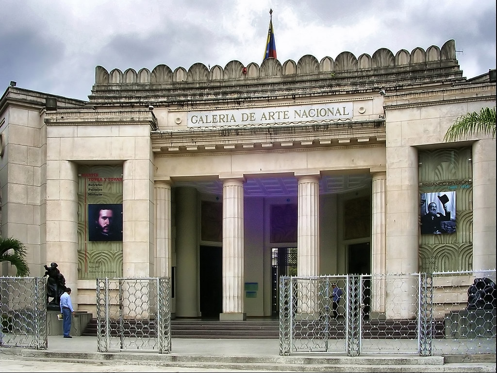
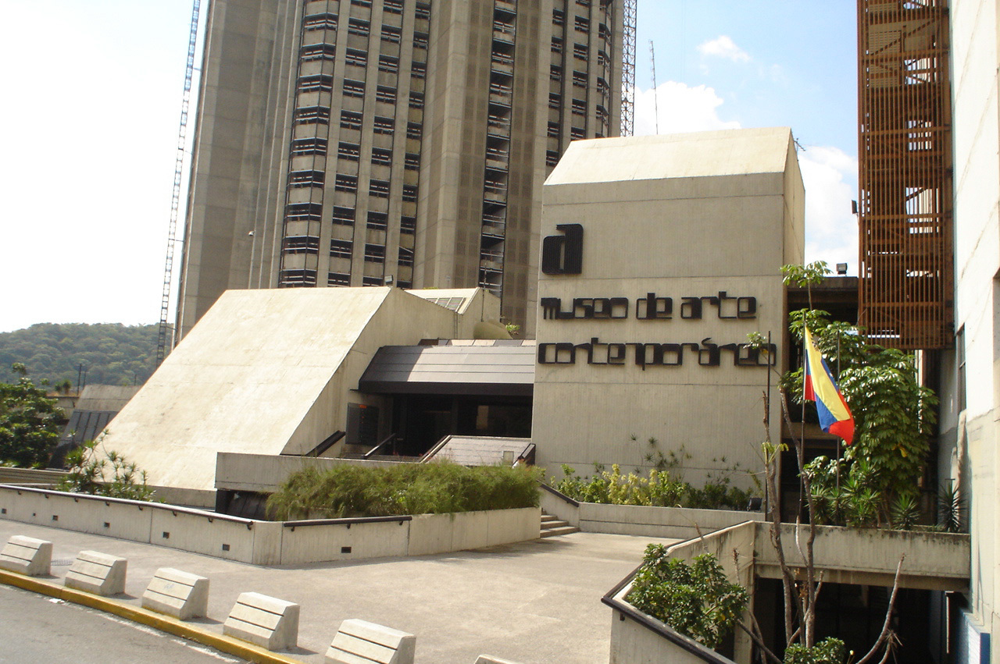
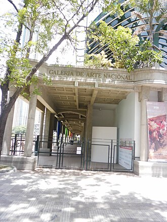
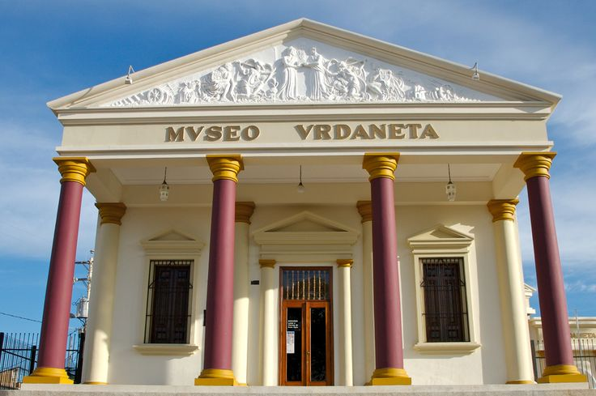

VENEZUELA'S MUSEUMS & ART GALLERIES
MUSEO DE BELLAS ARTES

The Museo de Bellas Artes in Caracas is Venezuela's most prestigious fine arts institution, founded in 1917 and housed in a striking neoclassical building designed by renowned architect Carlos Raúl Villanueva. Its 5,600-piece collection spans civilizations and centuries — from ancient Egyptian objects and one of Latin America's finest Chinese ceramics collections to masterworks by Venezuela's greatest painters. The crown jewel of the Venezuelan collection is Arturo Michelena's powerful "Miranda en La Carraca," a deeply moving portrait of the revolutionary Francisco de Miranda imprisoned in a Spanish dungeon, widely regarded as one of the most important paintings in Venezuelan art history.
MUSEO DE ARTE CONTEMPORÁNEO DE CARACAS

The Museo de Arte Contemporáneo de Caracas is one of the most important contemporary art institutions in Latin America, celebrated for its extraordinary holdings of 20th and 21st century works. Its collection of Picasso ceramics is among the finest outside of Europe, while the groundbreaking kinetic installations of Venezuelan master Jesús Soto — whose shimmering, movement-based works transformed the global art world — form the heart of its Venezuelan collection. The museum's sweeping outdoor sculpture garden blends art seamlessly with tropical architecture, creating an immersive experience that extends well beyond the gallery walls.
GALERÍA DE ARTE NACIONAL

The Galería de Arte Nacional is the definitive home of Venezuelan visual art history, one of the few museums in South America founded specifically to preserve and celebrate a nation's cultural identity through art. Its collection traces Venezuela's artistic soul from pre-Columbian pottery to the sweeping independence-era battle canvases of Martín Tovar y Tovar, whose monumental depiction of the Battle of Carabobo ranks among the most celebrated paintings in the country. The vivid historical scenes painted by Tito Salas, capturing Simón Bolívar and the heroes of independence, bring Venezuela's foundational moments to breathtaking life on an epic scale.
MUSEO DE ARTE DE MARACAIBO

The Museo de Arte de Maracaibo celebrates the rich and distinct cultural identity of Venezuela's Zulia region, a land shaped by the convergence of indigenous traditions, colonial history, and the transformative power of the oil industry. Its Zulian folk art collection showcases vibrant handcrafted works passed down through generations, while the oil industry exhibit tells the dramatic story of how petroleum reshaped the landscape and society of western Venezuela throughout the 20th century. The museum's regional textile collection, woven in patterns unique to the Lake Maracaibo basin, is among the most visually striking cultural artifacts in the entire country.